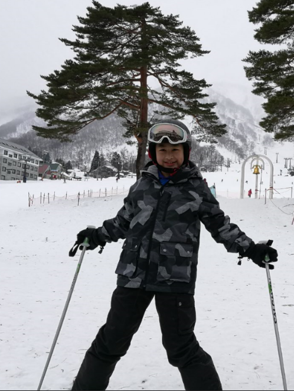

2004: I was born.
My name is Pin-en Chen. I am 13 years old. I like computer a lot. My favorite food is pork. I like to do math in my free time. I will do any thing that my parents tell me. Well, sometimes I will forget. I am a good cook ,too. I can cook many different dishes.
- I was in japan.
- I was 12 years old.
- I was skiing.
- It is fun.
- I am great at skiing.
- It is 5 degree there.
I have a great computer teacher. My computer teacher is handsome and smart. He taught me for 5 weeks. He is a genius. He can fix any thing about computer.